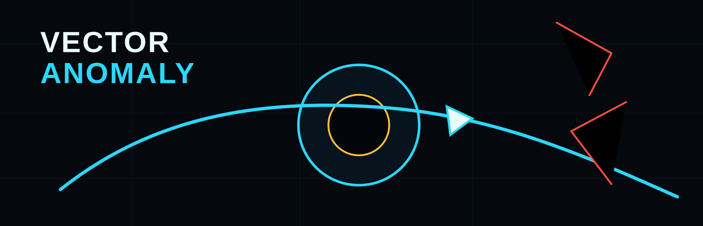

What It Is
Vector Anomaly is a run-based physics roguelike arena survival game. The player survives by reading gravity fields, preserving momentum, slingshotting around mass, and turning dangerous physics into recovery routes.

MECHANICS INDEX // PUBLIC READOUT
Familiar arena survival structure, unfamiliar physics reality engine. Use this wiki to understand the rules before they break.
CORE IDENTITY
Vector Anomaly is a run-based physics roguelike arena survival game. The player survives by reading gravity fields, preserving momentum, slingshotting around mass, and turning dangerous physics into recovery routes.
It should not be framed as a generic twin-stick shooter, loot fantasy, bullet spam game, or power fantasy. The public hook is watchable impossibility that becomes understandable after survival.
PLAYER SYSTEMS
Thrust accelerates along the ship vector and spends energy. Good thrust decisions preserve route options instead of simply pointing away from danger.
Drag ON is the control style: tactical braking, tangent cleanup, recovery routing, and small energy returns inside gravity windows.
Drag OFF preserves high-speed motion. It is riskier, clip-friendlier, and better for players who can read a future path under pressure.
The orbital trajectory predictor is production-facing, not debug clutter. It should stay bright and readable: orange immediate danger, cyan continuation, glow, fade, and compact origin marker.
SLINGSHOT MASTERY
Too far wastes pressure. Too close risks scraping the core.
The player should feel like they are converting panic into route geometry.
Great, perfect, and apex grades earn stronger feedback. Routine orbit assists stay quiet.
RESONANCE FIELDS
Bodies fall toward the zone core. Use it to bunch enemies, bend shots, or dive through danger.
Bodies are pushed outward. Use it for emergency escape routes and projectile denial.
Bodies slide along the tangent. Use it to turn panic into lateral speed.
Enemies and hostile projectiles lose time locally while the player stays responsive.
Bodies curve into stable arcs for trick shots, recovery loops, and apex payoffs.
ARENA RULES
RUN PROGRESSION
Boss Rush runs the authored boss sequence back to back with shorter rest windows and no authored Rupture/finale transition.
BOSS INDEX
Resonance field control.
Debris compression and collision pressure.
Ability and time disruption lanes.
Synchronized push and pull polarity windows.
Rotating rift lanes and tide pockets.
Parametric body and phase shifts.
Shear halos that bend crossed trajectories.
Outside-space breaches and deterministic survival telegraphs.
Music-synced pulses, sweeps, and local gravity collapse.
Hidden vector-shear route from chained apex slingshots.
Hidden temporal-gate route from temporal-scar mastery.
Hidden gravity-eating route from repeated gravity-scar formation.
ENEMY READABILITY
BUILDS AND DROPS
SEEDS AND SCORES
Event-horizon grazes require remaining undamaged during the window. Challenge codes include the score before the checksum, such as standard:7135:35:12840_9F3AC12B0E.
CO-OP FOUNDATION
One player hosts and plays. Other players join by IP and port. The host owns run start, restart, scene flow, and deterministic run config.
Distinct player vector events can combine into shared resonance/time payoffs through CoopComboDirector without changing solo mechanics.
Steam support should be a transport adapter behind NetworkSession, not a gameplay fork.
MODDING CONTRACT
vector_anomaly_mod.json supports dependency bounds, conflict declarations, deterministic ordering, and typed creator options.
Law weaves, anomaly recipes, and challenge cards declare hooks, conditions, and effects. Trusted directors decide what to consume.
Entries and creator options declare local visual, exported state, reliable event, or deterministic seed behavior for co-op compatibility.
Persisted bool, number, text, choice, and color values can gate hooks through mod_option conditions.
Required and optional dependencies, min/max versions, load_before, load_after, and conflicts resolve before activation.
The Mods screen exposes live options and exports failures, conflicts, resolved load order, install paths, and signatures in one report.
Generate a starter manifest, search content surfaces, download the schema, and follow the cross-platform shipping checklist in the dedicated mod creator website.
READABILITY AND ACCESSIBILITY
Death is a diagnostic event. Game over displays the lesson plus wave, speed, field rule, chaos tier, projectile density, and boss-law context.
PRODUCTION ARCHITECTURE